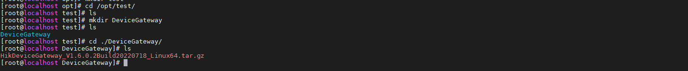
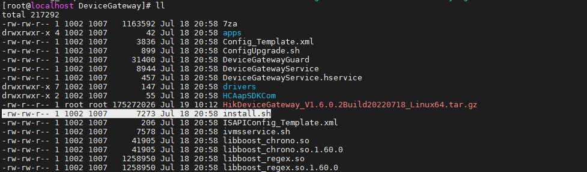
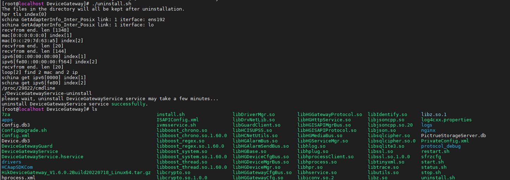

Step 1: Install Device Gateway
You can install the Device Gateway service to your server or PC to use the service remotely. This part contains the following sections.
Port Instruction
Before using this service, check if the default ports of the Device Gateway are used. You can configure them if the default ports are used.
Install Device Gateway on Windows
-
Right-click the program file, run as the administrator to enter the welcome panel, and select Next.
-
(Optional) Select Browse... to select the path of legacy configuration files, and select Next.
Note-
If you have kept the configuration files of an uninstalled Device Gateway, the Device Gateway will reuse the files saved in the selected path when you install a new version.
-
If the configuration file path of previous version is detected, it is selected by default.
-
-
Select Browse..., select a proper directory as required to install the service, and select Next.
-
(Optional) If the default HTTP port is used, edit the port number.
-
Select Install.
-
Read the post-install information and select Finish to complete the installation process.
-
After the Device Gateway is installed, the login page will automatically open in your default web browser.
-
After the Device Gateway is installed, the Watchdog service will get started and hide in the notification area of the desktop. Right-click and select the option to stop the service and start the Device Gateway service, or exit the Watchdog service.
-
If you install the Device Gateway remotely, log into the local computer to show the Watchdog service.
Install Device Gateway on Linux
- Add a folder such as /opt/test/DeviceGateway as the installation directory of
the Device Gateway, and put the installation package in the folder.

Figure 1 Installation Folder -
Execute tar command to extract the file to the installation directory.
Figure 2 Extract FileFigure 3 Extract File -
Execute chmod command to configure permissions for istall.sh in the installation directory.

Figure 4 Before ConfigurationFigure 5 After Configuration -
Execute istall.sh to install the Device Gateway.
-
(Optional) Execute --help of the install.sh script to view the available options.
Figure 6 Options -
(Optional) You can configure --port of the install.sh to set the HTTP port number which you use to visit the Device Gateway. The port number is 80 by default.
-
(Optional) You can configure --path of the install.sh to set the directory of legacy files. If there are any legacy files including device and the Device Gateway parameters, enter the path of it so that you do not need to configure it again.
-
(Optional) You can also install without options.
Figure 7 No Options
-


-
You need to run the Device Gateway as the administrator.
-
After installation, the system parameters will be changed by default: the DefaultLimitNOFILE in /etc/systemd/system.conf will be changed to 1000000, and SELinux will be disabled.
-
When you install the Device Gateway, you can automatically get all permissions of the files under the installation directory to ensure that the Device Gateway works well.
-
When you install the Device Gateway, the default ports of firewall will be automatically used. The ports are as follows:
Port
Number
tcp
80 (the HTTP port you set), 443, 554, 7091, 7661-7667, 15000-17000
udp
7661, 7662, 15000-17000
Figure 8 Ports -
Execute status.sh to view the Device Gateway status.
-
Execute start.sh to start the Device Gateway which is in stopped status, and execute stop.sh to stop the Device Gateway which is in running status.
Figure 9 Current Status -
Execute uninstall.sh to uninstall the Device Gateway. The files in the installation directory will all be kept after uninstillation, and you can manually delete them.

Figure 10 Uninstall Device Gateway


Activate Device Gateway
By default, the administrator user name is set to admin by default. When you log in to the Device Gateway for the first time, you are required to create a password for the admin user to activate the service.
|
Scenario |
Activation Process |
|---|---|
|
Install the Device Gateway on Windows and activate it on your local PC. |
After the Device Gateway is installed, the login page will automatically open in your default web browser.
|
|
|